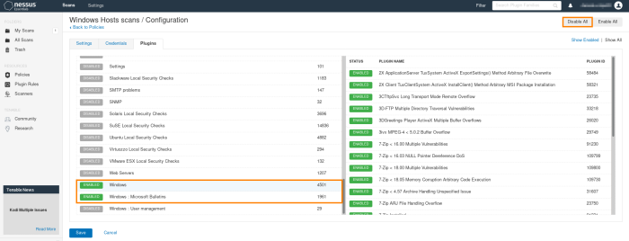
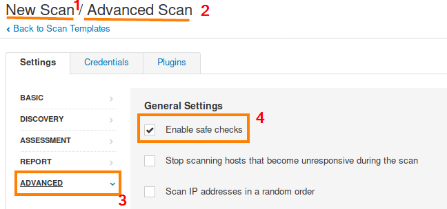

Plugins
From here we can check which plugins(specific security family) to enable, and from each plugin choose the vulnerabilities that nessus will run against the target machine
Scan Windows known vulnerabilitiesBefore make a Scan
For any scan that we make for a company we have to save plugin informations that we are using for the test.
These informations about the plugins are stored in a file called "plugin_feed_info.inc"
Linux:cp /opt/nessus/lib/nessus/plugins/plugin_feed_info.inc /home/kali/Desktop/nessus-backup-plugins/plugin_feed_info.inc
C:\Program Files\Tenable\Nessus\nessus\plugins\plugin_feed_info.inc
Some, but not all, of the Nessus
denial-of-service plugins are dangerous.
Some of them:
◇ Some launch malformed packets at the target service, which could cause it to crash.
◇ Some password guessing plugins are dangerous because they could lock out accounts in a target environment.
◇ Some formulate benign exploit code for a target, which could crash a service running on it.
To disable all dangerous plugins we have to check a configuration known as "
Enable safe checks" in the Nessus configuration GUI.
Instead to run the dangerous plugins(if Rules of Engagement allow it) we have first disable the safe check and then enable individual dangerous plugins(disabled by default) in the Scan Policy if you want to run them.
{kind=link}